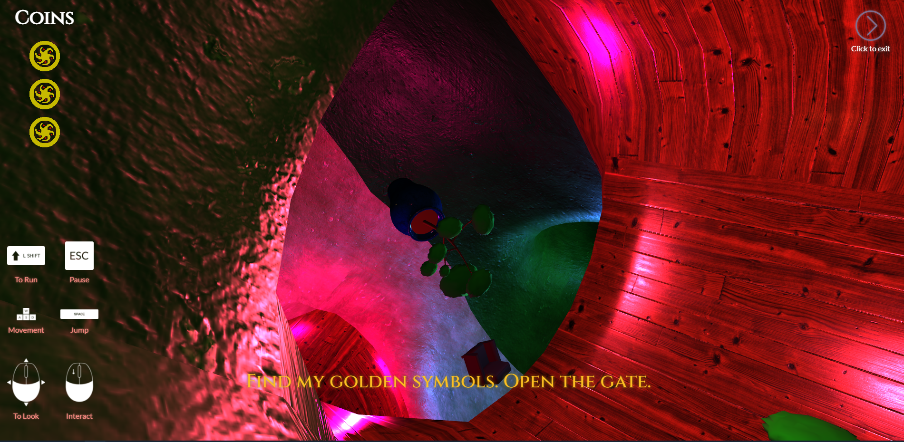

I worked on the website changelingvr.com as a web developer. I used HTML, CSS, and a lot of JavaScript to build a fully interactable web experience. I worked on the character experiences using three.js to make a first-person 3D maze. It is a verticle maze with no fixed up/down direction where you navigate by walking on the walls. I designed this maze using a complex system of quaternions and linear algebra so that you could jump or stroll through the various tunnel ways satisfyingly.
I made 3D models and exported them as GLBs for the experience. I built most of the items inside the maze, including the exit tokens, the exit, and the Maze itself.
I made a complex but lightweight collision system for the player to bump off the objects in the scene that used non-axis-aligned bounding boxes. In the game they are invisible but I added debug boxes that can be activated in testing that appear as transparent green boxes.